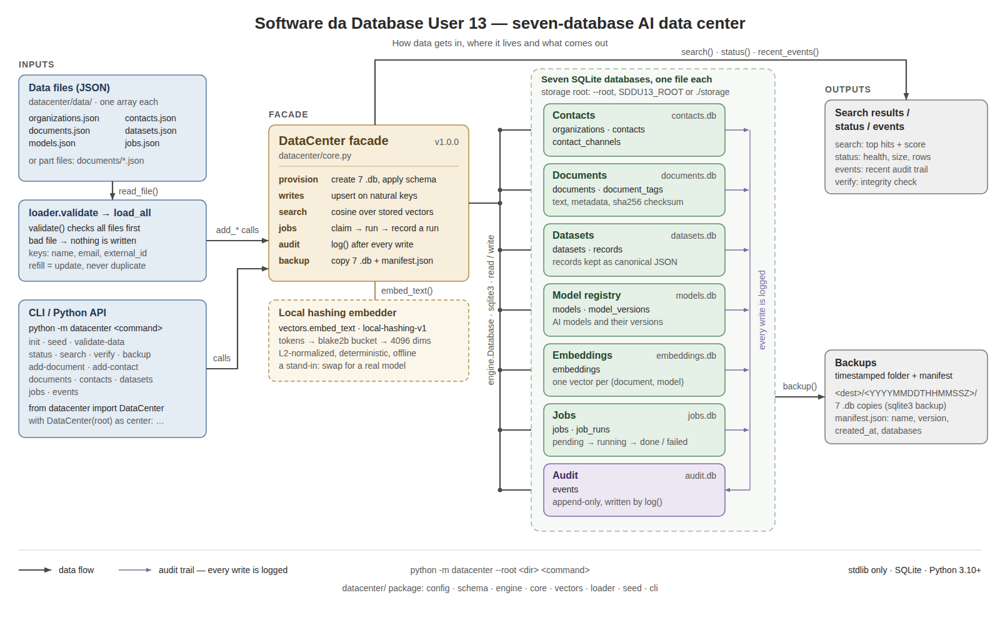

Software da Database User 13
Seven SQLite databases under one Python facade: contacts, documents, datasets, a model registry, a vector index, a job queue and an audit trail. Semantic search out of the box, backups in one command, no third-party packages.

The seven databases
Contacts
People and organizations, with their channels. organizations, contacts, contact_channels
Documents
Documents, their text, metadata and tags. documents, document_tags
Datasets
Structured records grouped into named datasets. datasets, records
Model registry
AI models available to the data center and their versions. models, model_versions
Embeddings
Vector index backing semantic search over documents. embeddings
Jobs
Queue of processing work with a run history. jobs, job_runs
Audit
Append-only log of every write and operation. events
Quick start
python -m datacenter init # create the seven databases
python -m datacenter seed # load the bundled data files (safe to repeat)
python -m datacenter status # health, size and row counts
python -m datacenter search "who do I page during a security incident"0.4907 #4 Incident response contactsNeeds Python 3.10 or newer and nothing else. Databases land in ./storage; every write is logged, verify integrity-checks all seven, and backup copies them into a timestamped folder with a manifest.
What is in the box
- Data in files.
datacenter/data/*.jsonis the source of truth;seedis a refill keyed on natural keys, so running it again updates what changed and adds nothing twice. - Fictional by construction. The validator rejects any contact email outside the reserved documentation domains.
- Search that works offline. A deterministic hashing embedder ships with it; swap in a real embedding model when you want production retrieval, several can coexist.
- Tested. A unittest suite covers provisioning, every database, search ranking, refill behaviour, job failure handling, backup restore and the CLI.